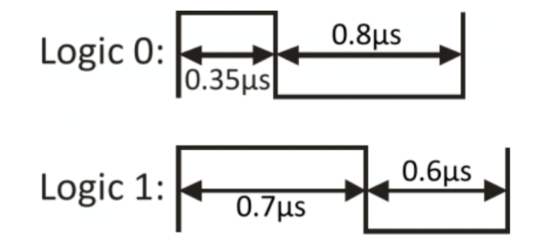
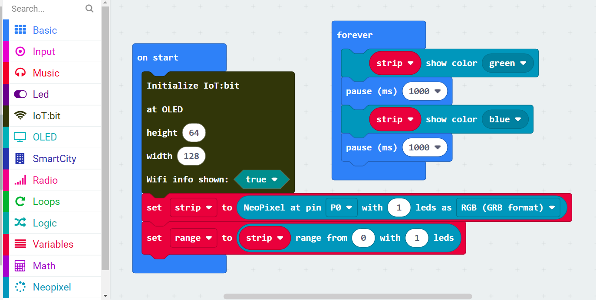

9. Multi-color LED WS2812B¶

9.1. Introduction¶
Multi-color LED WS2812B is an integrated LED chip which can create different RGB color. Using programming, user can pick any one of color in 16 million color and showing it.
9.2. The principle¶
The WS2812B have a small chip inside the module, which handle the incoming data and communicate with the next WS2812B in the serial. WS2812B operation under digital, user need to follow the special logic representation to transmits the data.

WS2812B allow connect to other WS2812B and share the signal line, but benefit from the data transmission policy, it can use the single line to control all the light individually.

For each WS2812B, there are three 8bit color LED (Green, Red, Blue) inside, so each 2812B required total 24bit of data in once action.

After the 24 bits data read by WS2812B, the remaining data bit will pass to next 2812B(if need), so the next 2812B is possible to read another set of data to produce different color.
When all the data bit is sent, another 50us reset code is required to let chip understand the transmission is end and control the led to emit the light.

9.3. Specification¶
Supply Voltage: 3.3V to 5V
Interface: Digital
Range of Color: (0,0,0) to (255,255,255)
9.4. Pinout Diagram¶
| Pin | Function |
|---|---|
| G | Ground |
| V | Voltage Supply |
| S | Signal Input(Digital) |

9.6. Quick to Start/Sample¶
Connect the sensor to development board (direct plugin or using wire)

Open Makecode, using the https://github.com/smarthon/pxt-smartcity PXT

Use to PXT library to control the LED showing different colors 
9.7. Result¶
The WS2812B following the program to change the color